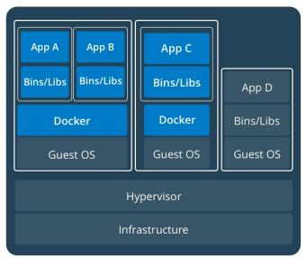
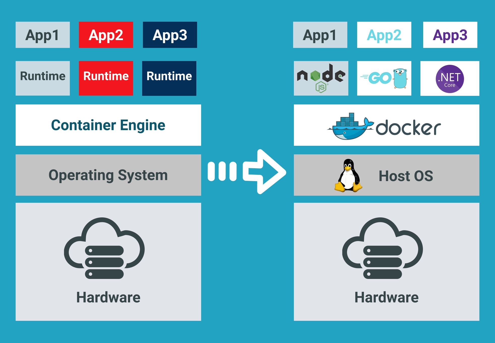
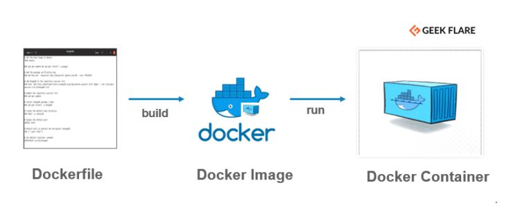
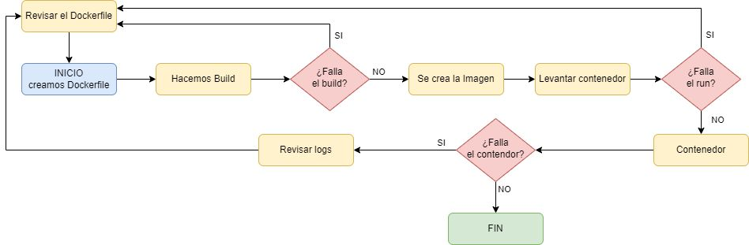

Docker
0. Contenedores vs. Virtualización
Docker no es una máquina virtual, aunque a primera vista lo parezca. La diferencia está en qué capa se virtualiza:

Cada máquina virtual arrastra un Guest OS completo propio — de ahí que pese gigas y tarde minutos en arrancar. Los contenedores de la izquierda, en cambio, comparten el mismo Guest OS a través del motor de Docker — solo empaquetan la app y sus binarios/librerías, de ahí que pesen megas y arranquen en segundos. El de la derecha (App D) representa una app sin contenedor, corriendo directamente sobre el Guest OS, para que se vea el contraste.
1. Qué es Docker
Docker es una plataforma de software que permite crear, probar e implementar aplicaciones rápidamente.
Si queremos ejecutar un servicio, tradicionalmente hay que instalarlo directamente en una máquina Linux o Windows. Docker proporciona ese mismo servicio sin instalarlo en la máquina anfitriona, lo que nos permite abstraernos completamente del entorno — el servicio y sus dependencias viajan siempre juntos, empaquetados.
Aplicado a DWEC
En este módulo, Node, npm y Vite corren dentro de un contenedor Docker — no están
instalados en tu equipo. VS Code se conecta directamente dentro de ese contenedor
(extensión Dev Containers), así que el terminal integrado que usas cada día ya es el
terminal del contenedor. Cuando ejecutas npm run dev y luego abres localhost:5173
en tu navegador, lo que está pasando por debajo es justo lo que se explica en la sección
de mapeo de puertos, más abajo.

A la izquierda, cada aplicación necesita su propio runtime instalado directamente sobre el sistema operativo. A la derecha, Docker se sitúa como una capa única entre el sistema operativo anfitrión y todas las aplicaciones — cada una trae su propio entorno (Node, Go, .NET...) empaquetado dentro de su contenedor, sin tener que instalar nada de eso en el host.
Fortalezas
- Ligereza: un contenedor, por lo general, pesa muy poco (ej.
nginx:alpineson solo 15 MB). - Repositorios y repetibilidad: facilidad para compartir contenedores en
repositorios y moverlos entre entornos de desarrollo. Se crean a través de un archivo
Dockerfile. - Orquestación: junto a los contenedores existen multitud de herramientas para su monitorización, despliegue, autoescalado, etc.
- Entorno local de desarrollo: posibilidad de levantar entornos con facilidad, con varios contenedores trabajando entre ellos.
- Entornos de ejecución de pruebas: entornos dinámicos con autoescalado para ejecución de pruebas unitarias o de integración.
Debilidades
- Dificultad: migrar aplicaciones enteras a Docker puede suponer un incremento de la complejidad de mantenimiento.
- Seguridad: al compartir el kernel del host, existe la posibilidad de que una vulnerabilidad en el mismo afecte a todos los contenedores que corren sobre él.
2. Definiciones
| Concepto | Descripción |
|---|---|
| Image (Imagen) | Un archivo inerte e inmutable que es básicamente un snapshot de un contenedor. Similar al concepto de ISO. Se versionan. |
| Dockerfile | El archivo en el que se definen las instrucciones necesarias para crear una imagen de Docker. |
| Container (Contenedor) | Una imagen de Docker en funcionamiento — la imagen ejecutándose. |
| Registry | Repositorio donde se suben las imágenes de Docker. Docker ofrece DockerHub para uso gratuito. |
| Volumes | El almacenamiento de un contenedor es efímero: cuando el contenedor se para, los datos internos desaparecen. Docker permite montar volúmenes que persisten más allá de la vida del contenedor. |
3. Flujo de Trabajo: Elementos

Generamos un fichero Dockerfile para construir después una imagen. Una vez realizado este
proceso, levantamos esa imagen para usar el servicio instalado en ella.
4. ¿Qué es un Fichero Dockerfile?
Es un simple archivo de texto con un conjunto de comandos o instrucciones. Estos comandos/instrucciones se ejecutan sucesivamente para realizar acciones sobre la imagen base y así crear una nueva imagen Docker.
Es un archivo sin extensión (se llama literalmente Dockerfile, sin .txt ni nada
detrás).
Comandos básicos de un Dockerfile
| Comando | Descripción |
|---|---|
FROM |
Define la imagen base que se utilizará para iniciar el proceso de compilación. |
WORKDIR |
Define el directorio de trabajo dentro del contenedor — todos los comandos siguientes (RUN, COPY, CMD...) se ejecutan relativos a esta carpeta. |
RUN |
Toma el comando y sus argumentos para ejecutarlo durante la construcción de la imagen. |
CMD |
Define el comando que se ejecuta al arrancar el contenedor — se puede sobrescribir fácilmente al lanzar docker run. |
ENTRYPOINT |
Define el comando que se ejecuta al arrancar el contenedor, igual que CMD, pero no se sobrescribe por accidente — pensado para contenedores con un único propósito claro. |
COPY / ADD |
Copia los archivos del origen al destino (dentro del contenedor). |
ENV |
Establece variables de entorno. |
EXPOSE |
Documenta qué puerto usa el servicio dentro del contenedor (no lo hace accesible por sí solo — ver mapeo de puertos más abajo). |
Documentación de referencia: docs.docker.com/engine/reference/builder
RUN vs. CMD vs. ENTRYPOINT — la confusión más común
Los tres ejecutan algo, y por eso se confunden
La diferencia real está en cuándo:
RUNse ejecuta una vez, al construir la imagen (docker build). Sirve para dejar cosas instaladas dentro de la imagen (ej.RUN npm install). No vuelve a ejecutarse nunca más una vez la imagen está construida.CMDyENTRYPOINTse ejecutan cada vez que arranca un contenedor a partir de esa imagen (docker run). No instalan nada — lanzan el proceso principal del contenedor.
FROM node:20
WORKDIR /app
COPY . .
RUN npm install # Se ejecuta UNA VEZ, al hacer "docker build"
CMD ["npm", "run", "dev"] # Se ejecuta CADA VEZ que se hace "docker run"
La diferencia entre CMD y ENTRYPOINT: con CMD, si lanzas
docker run mi-imagen npm run build, ese npm run build sustituye por completo al CMD del
Dockerfile. Con ENTRYPOINT, en cambio, lo que escribas después en docker run se añade
como argumento al ENTRYPOINT, no lo sustituye — se usa cuando quieres que el contenedor
haga siempre lo mismo pase lo que pase. Para el día a día de este módulo, CMD es
suficiente en la inmensa mayoría de los casos.
Ejemplo de Dockerfile
# Usa una imagen base de Apache
FROM httpd:2.4
# Copia tus archivos de configuración personalizados de local al contenedor
# COPY ./mi-configuracion.conf /usr/local/apache2/conf/mi-configuracion.conf
# Puerto por defecto para Apache
EXPOSE 80
# Inicia el servidor Apache
CMD ["httpd", "-D", "FOREGROUND"]
El Compañero Inseparable del Dockerfile: .dockerignore
Cuando usas COPY . . para copiar tu proyecto al contenedor, Docker copia literalmente
todo lo que haya en esa carpeta — incluida node_modules (que puede pesar cientos de MB y
además puede tener binarios compilados para tu sistema operativo, no para el del
contenedor), o la carpeta .git entera.
.dockerignore funciona exactamente como un .gitignore, pero para decirle a Docker qué
no copiar:
# .dockerignore
node_modules
.git
.env
*.log
Por qué importa de verdad
Sin él, tus builds son más lentos (copiar más datos de los necesarios), tu imagen final
pesa mucho más de lo que debería, y en el peor caso puedes arrastrar un node_modules
instalado en tu Windows/Mac dentro de un contenedor Linux, con dependencias que no
funcionan ahí — justo el tipo de "en mi máquina funciona" que Docker existe para evitar.
5. ¿Qué es una Imagen?
Una imagen de Docker es una plantilla de solo lectura que define un contenedor. La imagen contiene el código que se ejecutará, incluida cualquier definición para cualquier biblioteca o dependencia que ese código necesite.
Docker tiene su propio repositorio de imágenes prediseñadas con servicios ya desarrollados, tales como: Apache, Nginx, Node.js, Redis...
Repositorio de imágenes: Docker Hub
Las Imágenes se Construyen por Capas (Layers)
Cada instrucción de un Dockerfile (FROM, RUN, COPY...) no se ejecuta "de golpe": crea
una capa independiente, y Docker guarda esa capa en caché.
FROM node:20 # Capa 1
COPY package.json . # Capa 2
RUN npm install # Capa 3 -- la más lenta, instala dependencias
COPY . . # Capa 4 -- tu código, que cambia constantemente
Por qué importa esto en la práctica
Si solo cambias una línea de tu código (COPY . ., la última capa) y vuelves a construir
la imagen, Docker reutiliza las capas anteriores desde caché en vez de reinstalar
todas las dependencias otra vez — por eso el segundo docker build de un proyecto es
mucho más rápido que el primero. Por esta misma razón, en un Dockerfile real siempre se
copian primero los ficheros que cambian poco (package.json) y se instalan las
dependencias, y solo al final se copia el resto del código — así los cambios en tu código
no invalidan la capa (larga) de npm install.
6. ¿Qué es un Contenedor?
En base a la imagen generada anteriormente, un contenedor Docker es esa misma imagen ejecutada. Esto nos permite tener un entorno que puede estar basado en diferentes sistemas Linux (Debian, Ubuntu, CentOS...) con un servicio ejecutándose en su interior: Apache, Nginx, Redis, etc.
Es similar a una máquina virtual de VirtualBox, pero mucho más ligero, puesto que no tiene instalado nada que no sea el propio servicio que está ofreciendo.
Los Contenedores son Efímeros — y esto sorprende a todo el mundo la primera vez
En un ordenador normal, un archivo que creas se queda ahí hasta que tú lo borras. En un contenedor, no — si el contenedor se elimina, todo lo que hayas creado dentro de él (sin usar un volumen) desaparece con él, sin avisar ni pedir confirmación.
docker run -it --name prueba ubuntu bash
# Dentro del contenedor:
echo "hola" > /archivo.txt
exit
docker rm prueba # Eliminas el contenedor
docker run -it --name prueba2 ubuntu bash
cat /archivo.txt # Error: No such file or directory -- ¡nunca existió aquí!
/archivo.txt vivía solo dentro de aquel contenedor concreto, no en la imagen ubuntu
ni en ningún sitio persistente. Al borrar el contenedor, se borró con él. Esta es
precisamente la razón de que existan los volúmenes (sección 2): cualquier dato que
necesites que sobreviva a la vida de un contenedor concreto — una base de datos, ficheros
subidos por un usuario — tiene que vivir en un volumen, nunca "suelto" dentro del contenedor.
7. Comandos Docker
Comandos básicos
docker --version # Encontrar la versión instalada
docker build -t first-image . # Construye la imagen a partir del Dockerfile, con el nombre "first-image"
docker pull httpd # Descarga una imagen
docker images # Lista las imágenes disponibles en local
docker run -it -d httpd # Crea un contenedor a partir de la imagen httpd (Apache)
docker ps # Lista los contenedores en ejecución, con sus detalles
docker ps -a # Lista TODOS los contenedores (en ejecución, salidos o parados)
docker network ls # Lista los detalles de toda la red del clúster
Los Flags Más Usados de docker run, Explicados
Verás estos flags constantemente y se combinan entre sí — merece la pena saber qué hace cada uno por separado:
| Flag | Qué hace |
|---|---|
-d |
(detached) Arranca el contenedor en segundo plano y te devuelve el terminal al momento. |
-it |
Combinación de -i (interactive, mantiene abierta la entrada estándar) + -t (asigna una terminal). Úsalo cuando quieras escribir dentro del contenedor, como en una sesión de bash. |
--rm |
Elimina el contenedor automáticamente en cuanto termina de ejecutarse. Ideal para contenedores de usar y tirar (probar algo rápido), para no dejar basura acumulada. |
--name |
Le da un nombre concreto al contenedor, para no tener que usar el ID largo y aleatorio en comandos posteriores. |
Importante
-it y -d casi nunca tienen sentido juntos en el mismo docker run — uno pide una
terminal interactiva delante de ti, el otro manda el proceso a segundo plano sin
terminal. Si quieres entrar más tarde a un contenedor que ya arrancó en segundo plano con
-d, usa docker exec -it <contenedor> bash en vez de mezclar los flags al arrancarlo.
Mapeo de Puertos (-p) — por qué funciona localhost en tu navegador
Un contenedor vive en su propia red aislada — por defecto, nada de fuera puede acceder a
un puerto suyo, aunque el servicio de dentro esté funcionando perfectamente. EXPOSE en el
Dockerfile solo documenta qué puerto usa el servicio; no lo hace accesible.
Para que tu navegador (fuera del contenedor) pueda hablar con un servicio de dentro, hay que
mapear un puerto de tu máquina a un puerto del contenedor con el flag -p:
docker run -p 5173:5173 mi-imagen
# │ │
# │ └── puerto DENTRO del contenedor (donde escucha el servicio)
# └─────── puerto en TU máquina (localhost) que se conecta a él
Con esto, todo lo que llega a localhost:5173 en tu navegador se redirige automáticamente
al puerto 5173 de dentro del contenedor.
Aplicado a DWEC
Esto es exactamente lo que hace VS Code por ti automáticamente cuando trabajas con Dev
Containers — por eso nunca has tenido que escribir este comando a mano en clase, pero es
justo lo que ocurre por debajo cada vez que abres localhost:5173 tras un npm run dev.
Comandos sobre un contenedor concreto
Patrón general: docker [comando] [contenedor_id]
docker rm 9b6343d3b5a0 # Elimina el contenedor
docker rmi fce289e99eb9 # Elimina una imagen
docker restart 09ca6feb6efc # Reinicia el contenedor
docker stop 09ca6feb6efc # Para el contenedor
docker start 09ca6feb6efc # Inicia el contenedor
docker kill 9b6343d3b5a0 # Mata el contenedor (parada forzosa, sin gracia)
docker logs 9b6343d3b5a0 # Muestra los logs del contenedor
docker exec -it 9b6343d3b5a0 bash # Accede al contenedor y ejecuta comandos dentro de él
Referencia completa de comandos: geekflare.com/es/docker-commands
8. Logs
La herramienta Docker Logs se utiliza para obtener los logs o registros de un contenedor. Recupera por lotes los logs presentes en el momento de la ejecución del comando.
docker logs -f "nombre_del_contenedor"
El flag -f (follow) mantiene el log abierto en tiempo real, en vez de mostrar solo una
foto fija del momento.
9. Diagrama de Trabajo

Referencia: geekflare.com/es/docker-commands
10. Docker Hub
Docker Hub es un Docker Registry público donde subir nuestras imágenes. Permite registrarnos gratuitamente y subir nuestros contenedores de forma pública, además de explorar repositorios oficiales de otros servicios.
Crear una cuenta en hub.docker.com
Pasos para publicar una imagen:
- Registro en Docker Hub y creación de nuestro primer repositorio público.
- Usar el comando
docker loginpara autenticar nuestro equipo en ese repositorio. - Cambiar el tag de nuestro contenedor para ajustarlo al repositorio recién creado, y
subir la imagen con
docker push.
# login
cat password.txt | docker login --username demo --password-stdin
# tag images
docker tag "imagen_local" "repositorio/imagen_local"
# push imagen
docker push repositorio/imagen_local
11. Docker Compose
El escenario: imagina una aplicación compuesta por Node.js, MongoDB y Redis — tres servicios distintos que tienen que funcionar juntos.
La frustración de gestionarlo a base de docker run suelto:
- Necesitas recordar el orden de ejecución (primero la base de datos, luego la app).
- Configuración manual de
--networkpara que los contenedores se puedan comunicar entre sí. - Variables de entorno kilométricas escritas a mano en la terminal.
- Dificultad para replicar exactamente el mismo entorno en el equipo de un compañero.
Docker Compose resuelve exactamente este problema: describe todos los servicios, sus
redes y sus variables de entorno en un único fichero (docker-compose.yml), y los levanta
todos juntos, en el orden correcto, con un solo comando.
11.1. ¿Qué es exactamente Docker Compose?
Es una herramienta de orquestación — no crea ningún concepto nuevo respecto a lo que ya
sabes (sigue habiendo imágenes, contenedores, volúmenes, puertos), simplemente lee un fichero
de configuración (docker-compose.yml) y ejecuta, por ti, todos los docker run con sus
flags correspondientes, en el orden correcto, conectados a la misma red.
Piensa en ello como la diferencia entre encender uno a uno los electrodomésticos de una cocina, o pulsar un único interruptor general que los enciende todos en el orden correcto.
11.2. Anatomía de un docker-compose.yml, explicada línea a línea
services:
app:
build: .
ports:
- "5173:5173"
depends_on:
- mongo
environment:
- DB_HOST=mongo
volumes:
- .:/app
mongo:
image: mongo:7
volumes:
- datos_mongo:/data/db
volumes:
datos_mongo:
| Clave | Qué hace |
|---|---|
services: |
La lista de contenedores que forman tu aplicación. Cada uno definido debajo es un servicio independiente. |
app: / mongo: |
El nombre que le das a cada servicio. No es decorativo: este nombre es el que usan los demás servicios para encontrarlo en la red (ver más abajo). |
build: . |
"Construye la imagen de este servicio a partir del Dockerfile que hay en esta misma carpeta." Se usa cuando el servicio es tu propio código. |
image: mongo:7 |
"Usa directamente esta imagen ya existente de Docker Hub, no hace falta construir nada." Se usa para servicios de terceros (bases de datos, colas de mensajes...) que no vas a modificar. |
ports: |
Mapeo de puertos — es el mismo -p host:contenedor que ya viste con docker run, solo que en formato lista. |
depends_on: |
Controla el orden de arranque: app no empieza a levantarse hasta que el contenedor de mongo ha arrancado. (Ojo: lee el aviso más abajo — "arrancado" no es lo mismo que "listo para recibir conexiones".) |
environment: |
Variables de entorno para ese servicio — el equivalente en Compose al flag -e de docker run. |
volumes: (dentro de un servicio) |
Qué se monta y dónde. Puede ser un volumen con nombre (datos_mongo:/data/db) o un bind mount (.:/app — sigue leyendo). |
volumes: (al final, fuera de services) |
Declara los volúmenes con nombre que se usan arriba, para que Docker los cree y los gestione. |
11.3. Dos tipos de volumes muy distintos — y uno es justo lo que usa tu Dev Container
Volumen con nombre (datos_mongo:/data/db): Docker gestiona dónde se guarda físicamente
ese dato. Lo usas para datos que quieres que persistan (como la base de datos), pero que
no necesitas mirar ni editar tú directamente desde fuera del contenedor.
Bind mount (.:/app): conecta directamente una carpeta de tu máquina (., la carpeta
actual) con una carpeta dentro del contenedor (/app). Cualquier cambio que hagas en tu
editor se refleja al instante dentro del contenedor, y viceversa — son literalmente la misma
carpeta vista desde dos sitios.
Aplicado a DWEC
Esto es exactamente lo que hace posible Dev Containers. Cuando editas un archivo en VS Code y ves el cambio reflejado al instante dentro del contenedor (sin tener que reconstruir ni copiar nada), es un bind mount trabajando por debajo — tu carpeta del proyecto está montada dentro del contenedor, no copiada.
11.4. Cómo se comunican los servicios entre sí
Docker Compose crea automáticamente una red privada compartida por todos los servicios del mismo fichero. Dentro de esa red, cada servicio puede llamar a los demás usando su nombre como si fuera un dominio — no hace falta averiguar ninguna IP:
// Dentro del contenedor "app", esto FUNCIONA:
mongoose.connect("mongodb://mongo:27017/miapp");
// └─┬─┘
// el nombre del servicio en docker-compose.yml,
// Docker lo resuelve automáticamente
Esto solo funciona entre contenedores de la misma red de Compose — tu navegador, que
está fuera de esa red, nunca podría usar mongo como si fuera una URL real; para el
navegador todo pasa siempre por localhost y el puerto mapeado.
11.5. Comandos de Docker Compose
docker compose up # Construye (si hace falta) y levanta TODOS los servicios
docker compose up -d # Igual, pero en segundo plano (recuperas el terminal)
docker compose up --build # Fuerza reconstruir las imágenes, aunque ya existan
docker compose down # Para y ELIMINA los contenedores (los volúmenes con nombre se conservan)
docker compose down -v # Igual, pero además borra los volúmenes con nombre (¡pierdes los datos!)
docker compose ps # Lista el estado de los servicios de ESTE proyecto
docker compose logs # Logs de todos los servicios a la vez
docker compose logs -f app # Logs en tiempo real de un único servicio ("app")
docker compose exec app sh # Abre una terminal dentro del contenedor "app" (equivalente a "docker exec")
docker compose restart app # Reinicia solo un servicio, sin tocar los demás
11.6. El error más común: depends_on no espera a que el servicio esté "listo"
Arrancado no es lo mismo que listo para recibir conexiones
depends_on solo garantiza que Docker arranca mongo antes que app — no que
MongoDB ya esté aceptando conexiones cuando app empiece a ejecutarse. Un contenedor
puede tardar unos segundos en estar realmente operativo por dentro, aunque el contenedor
ya figure como "iniciado".
Síntoma típico: tu app falla al conectar a la base de datos justo al arrancar todo
con docker compose up, pero funciona perfectamente si la reinicias 5 segundos después
(docker compose restart app) — porque para entonces mongo ya estaba listo de verdad.
Cómo se soluciona en proyectos reales: con lógica de reintento en el propio código de la
app (reintentar la conexión unas cuantas veces con una pequeña espera entre intentos), o con
una condición de healthcheck en el docker-compose.yml (más avanzado, lo verás si trabajas
con Compose en profundidad más adelante).
12. Docker Más Allá de Este Módulo
Todo lo anterior lo has visto aplicado a DWEC, pero Docker no es una herramienta de esta asignatura — es una pieza estándar de la industria que te vas a encontrar en casi cualquier módulo o puesto de trabajo relacionado con desarrollo o sistemas. Esto es lo que conviene que reconozcas aunque no lo domines todavía:
Docker Desktop — cómo lo vas a instalar tú mismo
En este módulo ya tienes el contenedor preparado de antemano, pero en otras asignaturas (o en tu propio ordenador) probablemente necesites instalarlo tú. Docker Desktop es la aplicación oficial con interfaz gráfica para Windows y macOS — instala por debajo el mismo motor de Docker que has usado aquí por terminal, pero añade una ventana donde puedes ver tus imágenes, contenedores y volúmenes con clics en vez de comandos. En Linux, se suele instalar directamente el motor (Docker Engine) sin la capa gráfica, porque el terminal ya es nativo del sistema.
El Siguiente Escalón: Kubernetes
Docker Compose es perfecto para levantar 2-5 servicios en tu propio ordenador o en un único
servidor. Pero, ¿qué pasa cuando una empresa necesita ejecutar cientos de contenedores,
repartidos en decenas de servidores, que además tienen que reiniciarse solos si fallan y
multiplicarse automáticamente si hay mucho tráfico? Para eso existe Kubernetes (a menudo
abreviado K8s) — un orquestador de contenedores a gran escala. No es tema de este módulo,
pero es el nombre que verás constantemente en ofertas de trabajo junto a "Docker", y ahora
ya sabes qué problema resuelve cada uno: Docker empaqueta y ejecuta; Kubernetes decide
dónde, cuántas copias y qué hacer si algo falla, cuando la escala ya no cabe en un
docker-compose.yml.
Dónde te lo vas a encontrar en la práctica
- Integración Continua (CI/CD): cuando subes código a GitHub, es muy común que se ejecute automáticamente dentro de un contenedor Docker para compilarlo y testearlo en un entorno limpio e idéntico cada vez — ni tu sistema operativo ni lo que tengas instalado localmente afecta al resultado.
- Despliegue en la nube: AWS, Azure y Google Cloud aceptan contenedores Docker de forma nativa como unidad de despliegue — "sube tu imagen y nosotros la ejecutamos" es hoy la forma más común de publicar una aplicación en producción.
- Arquitecturas de microservicios: aplicaciones grandes divididas en piezas pequeñas e independientes (facturación, usuarios, notificaciones...), cada una en su propio contenedor, que se comunican entre sí igual que viste en la sección de Docker Compose — solo que a mayor escala.
Lo que te tienes que llevar de esta unidad
No es memorizar comandos, sino entender el porqué de cada pieza (imagen, contenedor, volumen, red, puerto) — esa base conceptual es la que se mantiene igual, uses Docker en DWEC, en otra asignatura, o en tu primer trabajo.
13. Redes en Docker: Topologías Multi-Red
Hasta ahora has trabajado siempre con una única red por defecto: todos los servicios de tu
docker-compose.yml se ven entre sí sin que tengas que pensar en ello. Eso cambia en cuanto
un proyecto necesita más de una red — por ejemplo, para separar una zona de servicios
internos de una zona expuesta al exterior. Esta sección explica cómo se comporta Docker en
ese caso, porque el razonamiento es el mismo se use para lo que se use: aislar una base de
datos, separar un front de un back, o construir una topología de seguridad completa.
13.1. El comportamiento por defecto (el punto de partida mental)
- Cada red de Docker (
bridge) es, en esencia, un conmutador virtual: todos los contenedores conectados a la misma red se ven entre sí directamente, en igualdad de condiciones. - Docker asigna automáticamente una subred y reparte IPs a los contenedores que se conectan a ella, salvo que se indique lo contrario.
- Por defecto, todo contenedor tiene salida a Internet a través de NAT en el host — como el wifi de casa, donde todo lo que hay detrás del router comparte una salida.
Docker no es \"seguro por defecto\" entre sus propios contenedores
Si metes dos servicios en la MISMA red Docker, no hay ningún control de tráfico entre ellos por el simple hecho de estar en Docker. El aislamiento y el filtrado hay que construirlos explícitamente — por defecto, una red Docker es plana.
13.2. Redes personalizadas: el primer nivel de segmentación
Cuando defines tus propias redes en docker-compose.yml (en vez de usar la red por defecto),
controlas de verdad la topología:
networks:
lan_net:
driver: bridge
ipam:
config:
- subnet: 10.10.10.0/24
Dos contenedores en redes distintas no se ven entre sí — ni siquiera hacen ping — a
menos que algo los conecte. Esa es la base real de cualquier segmentación tipo "zona interna
/ zona expuesta": no es una fantasía de diagrama, es una consecuencia directa de que sean
redes Docker diferentes.
13.3. La trampa de la IP .1
Docker reserva automáticamente la primera IP utilizable de cada subred (normalmente la .1)
para la puerta de enlace del propio bridge — el "router" interno que crea Docker para esa
red. Es exactamente igual que en una red doméstica: el router casi siempre es la .1.
Si asignas la IP .1 a un contenedor tuyo, choca con esa puerta de enlace
El síntoma no siempre es un error claro al arrancar — a veces el contenedor arranca pero
la conectividad se comporta de forma rara. docker network inspect <red> muestra el
campo "Gateway": conviene comprobarlo antes de fijar IPs a mano en el docker-compose.yml.
13.4. internal: true — qué hace de verdad (y qué no)
Una red marcada como internal: true no tiene ninguna ruta de salida fuera de sí misma — ni
a Internet, ni a otra red Docker, aunque el host sí tenga conectividad. Los contenedores de
esa red solo pueden hablar entre ellos, nunca salir por su cuenta.
Por qué esto no basta por sí solo
internal: true aísla la red, pero no crea automáticamente un camino controlado hacia
ella desde fuera. Ese camino hay que construirlo con un contenedor que SÍ esté conectado
a las dos redes a la vez (dual-homed) — es el único punto de paso entre ambas.
13.5. Por qué hacen falta rutas explícitas y NET_ADMIN
Aquí es donde más gente se pierde, porque parece que "ya debería funcionar" y no funciona. La secuencia lógica, paso a paso:
- Un contenedor de
red_aquiere hablar con uno dered_b. No están en la misma red, así que el sistema operativo del contenedor necesita saber por dónde llegar a esa subred — eso es una ruta. - Por defecto, un contenedor solo conoce la puerta de enlace de su propia red. No sabe
nada de
red_b. - Hay que añadirle una ruta estática: "para llegar a la subred de
red_b, pasa por el contenedor dual-homed" — eso es lo que hace unentrypoint.shconip route add. - Modificar la tabla de rutas de un contenedor requiere la capacidad
NET_ADMIN— sin ella,ip route addfalla conOperation not permitted. - Y hace falta la ruta en los dos sentidos: el contenedor de destino también necesita saber cómo volver al origen — si solo se añade la ruta de ida, las respuestas se pierden y parece un fallo aleatorio de conectividad.
El paralelismo que ayuda a entenderlo
Esto es literalmente lo mismo que configurar el encaminamiento entre dos redes físicas
con un router de por medio — con máquinas virtuales harías esto mismo con ip route o
con la configuración de red del sistema operativo. Docker no cambia el concepto de redes
y rutas, solo cambia dónde vive cada máquina.
13.6. Cómo se resuelven los nombres entre contenedores
Docker Compose crea, para cada red personalizada, un servidor DNS interno que resuelve el
nombre del servicio (tal como aparece en docker-compose.yml) a su IP — siempre que
ambos contenedores compartan esa red. Si un contenedor necesita un nombre concreto que no
coincide con el nombre del servicio (por ejemplo, para que cuadre con un certificado TLS),
hay que decidir explícitamente si se resuelve por DNS interno de Docker (dándole ese nombre
exacto al servicio, o un alias de red) o a mano por /etc/hosts — y ser consistente con esa
decisión en todo lo que dependa de ese nombre.
Aplicado a SAD
En el módulo de Seguridad y Alta Disponibilidad (SAD), estas ideas se llevan al extremo
en un escenario llamado SecureCorp: una topología con una red lan_net
(10.10.10.0/24), una red dmz_net (10.10.20.0/24, marcada internal: true) y un único
contenedor fw-perimeter, dual-homed, en la IP .2 de cada una — nunca en la .1,
precisamente por la trampa explicada arriba. Los contenedores de lan_net solo llegan a
los de dmz_net a través de rutas explícitas que pasan por fw-perimeter, con
NET_ADMIN en cada entrypoint.sh, y fw-perimeter es quien de verdad filtra ese
tráfico. A lo largo del curso esa misma topología se amplía con una red que simula
Internet, un túnel VPN y una red adicional para una aplicación web — pero el mecanismo de
base es exactamente el que se explica en esta sección.
| Red | Subred | Tipo |
|---|---|---|
lan_net |
10.10.10.0/24 | bridge normal — clientes internos |
dmz_net |
10.10.20.0/24 | internal — aloja el servicio protegido |
internet_net |
10.10.30.0/24 | bridge normal — simula "el exterior" |
dmz_web |
10.10.40.0/24 | internal — aloja la aplicación web |
Errores típicos con redes multi-red
- Poner un contenedor en la IP
.1de una red personalizada (choca con el gateway reservado por Docker). - Marcar una red como
internaly esperar que aun así tenga salida a Internet o a otra red — no la tiene, ni la tendrá, sin un contenedor dual-homed. - Añadir la ruta de ida (cliente → servidor) y olvidar la de vuelta (servidor → cliente) — la conectividad falla de forma asimétrica y es difícil de diagnosticar.
- Aplicar reglas o rutas a mano dentro de un contenedor ya arrancado, sin guardarlas en el
Dockerfile/entrypoint— funcionan hasta el siguientedocker compose restartodown && up, momento en el que "desaparece la magia". - Confundir
NET_ADMIN(capacidad para tocar la configuración de red de UN contenedor) con tener control sobre la red de Docker en general — son cosas distintas.